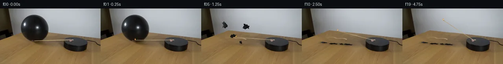

![首帧]()

Round 00
2026-11-05T12:10:13.850662+00:00像素候选变化代码 +265/−0inspection 更新
pixels a9cf01d73f57d162 · code 5cd8d068fecffef3
查看本轮 generate.py 真实 diff
--- previous/generate.py
+++ current/generate.py
@@ -0,0 +1,265 @@
+"""Deterministic local pixel continuation. No image/model/engine calls."""
+from pathlib import Path
+import json
+import numpy as np
+from PIL import Image, ImageDraw, ImageFilter
+from scipy.ndimage import gaussian_filter, map_coordinates, binary_dilation
+from artifact_io import save
+
+ROOT = Path(__file__).resolve().parent
+W,H,S=256,144,4
+source=np.array(Image.open(ROOT/'first_frame.png').convert('RGB'))
+orig=source.astype(np.float64)
+yy,xx=np.mgrid[:H,:W]
+rng=np.random.default_rng(114)
+
+def table_edge(x):
+ return np.maximum(84.0-.405*x,48.1+.112*x)
+
+# The source-derived balloon silhouette includes the tiny tied neck. It is
+# measured from dark row runs, with the interrupted lower edge specified below.
+left=[];right=[];ys=[]
+for y in range(16,81):
+ xs=np.flatnonzero((source[y,:,0]<110)&(source[y,:,1]<110)&(np.arange(W)>=52)&(np.arange(W)<=124))
+ left.append(float(xs.min())-.9);right.append(float(xs.max())+1.1);ys.append(y)
+left += [71.5,73.5,76.5,80,85,89,92,94,95.5,97]
+right += [110.5,108,108,108,108,107,105,104,103,102]
+ys += list(range(81,91))
+contour=[(86,14.9)]+list(zip(left,ys))+list(zip(right[::-1],ys[::-1]))
+ball_mask_hr=Image.new('L',(W*S,H*S));d=ImageDraw.Draw(ball_mask_hr)
+d.polygon([(round(x*S),round(y*S)) for x,y in contour],fill=255)
+ball_mask=np.asarray(ball_mask_hr.resize((W,H),Image.Resampling.LANCZOS)).astype(float)/255
+ball_erase=gaussian_filter(binary_dilation(ball_mask>.04,iterations=2).astype(float),.45)
+
+# Estimate the hidden wall with a smooth polynomial fitted exclusively to visible
+# source wall pixels. Fit residuals are extrapolated softly from known boundaries.
+wall_known=(xx>=35)&(yy<table_edge(xx)-2)&(yy<66)&~binary_dilation(ball_mask>.01,iterations=3)
+nx=(xx-128)/128;ny=(yy-36)/72
+powers=[(i,j) for i in range(6) for j in range(4) if i+j<=5]
+features=np.stack([nx**i*ny**j for i,j in powers],axis=-1)
+coef=np.linalg.lstsq(features[wall_known],orig[wall_known],rcond=None)[0]
+wall=features@coef
+res=np.zeros_like(orig);res[wall_known]=orig[wall_known]-wall[wall_known]
+weight=gaussian_filter(wall_known.astype(float),9)
+for c in range(3):wall[:,:,c]+=gaussian_filter(res[:,:,c],9)/np.maximum(weight,.001)
+wall_noise=orig[np.mod(yy,12),np.clip(xx,35,255)]
+wall_noise-=gaussian_filter(wall_noise,(1,1,0))
+wall+=wall_noise*.25
+
+# Inpaint the wood using two banks of nearby source wood, parameterized by
+# distance from its perspective back edge; this preserves wood grain and light.
+left_x=46+3*np.sin(xx*.63+yy*.13)
+right_x=139+7*np.sin(xx*.19+yy*.41)
+distance=yy-table_edge(xx)
+left_y=np.clip(table_edge(left_x)+distance,table_edge(left_x)+1,H-1)
+right_y=np.clip(table_edge(right_x)+distance,table_edge(right_x)+1,H-1)
+ltex=np.stack([map_coordinates(orig[:,:,c],[left_y,left_x],order=1,mode='nearest') for c in range(3)],axis=-1)
+rtex=np.stack([map_coordinates(orig[:,:,c],[right_y,right_x],order=1,mode='nearest') for c in range(3)],axis=-1)
+blend=np.clip((xx-49)/92,0,1)[...,None]
+wood=ltex*(1-blend)+rtex*blend
+wood+=rng.normal(0,.45,(H,W,1))
+edge_blend=np.clip((yy-table_edge(xx)+.3)/1.2,0,1)[...,None]
+recon=wall*(1-edge_blend)+wood*edge_blend
+background=orig*(1-ball_erase[...,None])+recon*ball_erase[...,None]
+# Remove the existing balloon cast shadow when the inflated skin is absent.
+shadow=np.exp(-(((xx-96)/26)**2+((yy-87)/7)**2)/2)*.92
+shadow*=np.clip((yy-80)/4,0,1)*np.clip((100-yy)/5,0,1)
+background=background*(1-shadow[...,None])+wood*shadow[...,None]
+
+# Separate the pale arm pixels from their existing background. The small red
+# mount on the fixed platform is left in place. A source-colored wooden shaft
+# is rotated about that attachment with a feathered, subpixel mask.
+under=orig.copy()
+for y in range(80,85):
+ a=(y-79)/6
+ under[y,86:176]=orig[79,86:176]*(1-a)+orig[85,86:176]*a
+ under[y,182:188]=orig[79,182:188]*(1-a)+orig[85,182:188]*a
+arm_roi=(xx>=87)&(xx<=175)&(yy>=80)&(yy<=84)
+arm_roi|=(xx>=182)&(xx<=187)&(yy>=80)&(yy<=82)
+arm_alpha=np.clip((orig[:,:,0]-under[:,:,0]-4)/70,0,1)*arm_roi
+# Correctly remove antialiased shaft fringes and restore the balloon's lower skin.
+arm_clear=np.clip(arm_alpha*2.8,0,1)
+base_ball=orig*(1-arm_clear[...,None])+under*arm_clear[...,None]
+base_empty=background*(1-arm_clear[...,None])+under*arm_clear[...,None]
+# Where the match crossed the old balloon, the uncovered scene must be wood.
+inside_old=ball_erase*arm_clear
+base_empty=base_empty*(1-inside_old[...,None])+recon*inside_old[...,None]
+# Recover a compact, source-textured shaft independently of extracted alpha.
… diff truncated; 178 more lines …